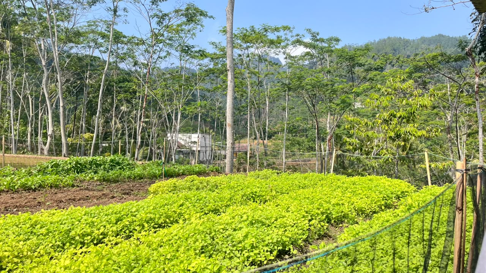
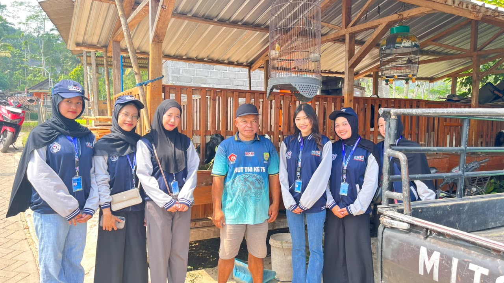
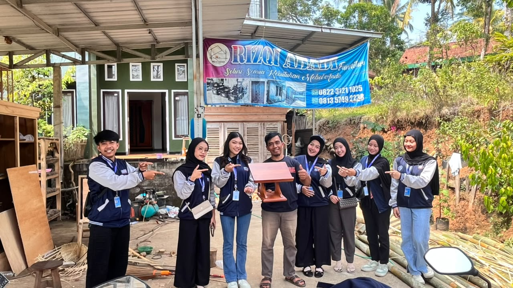
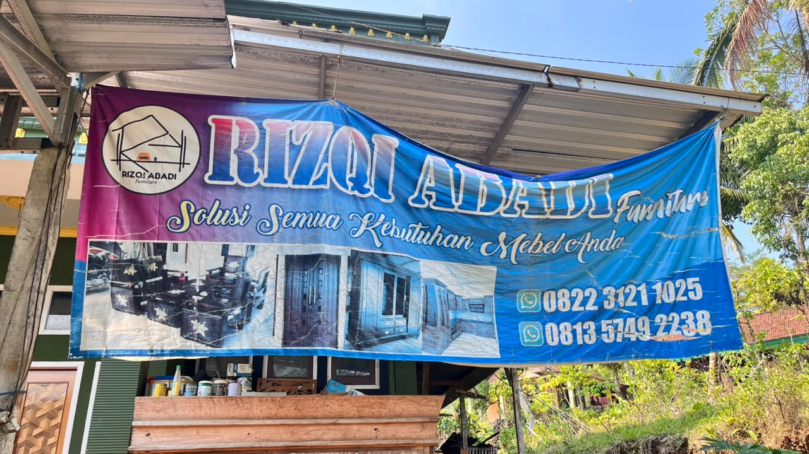
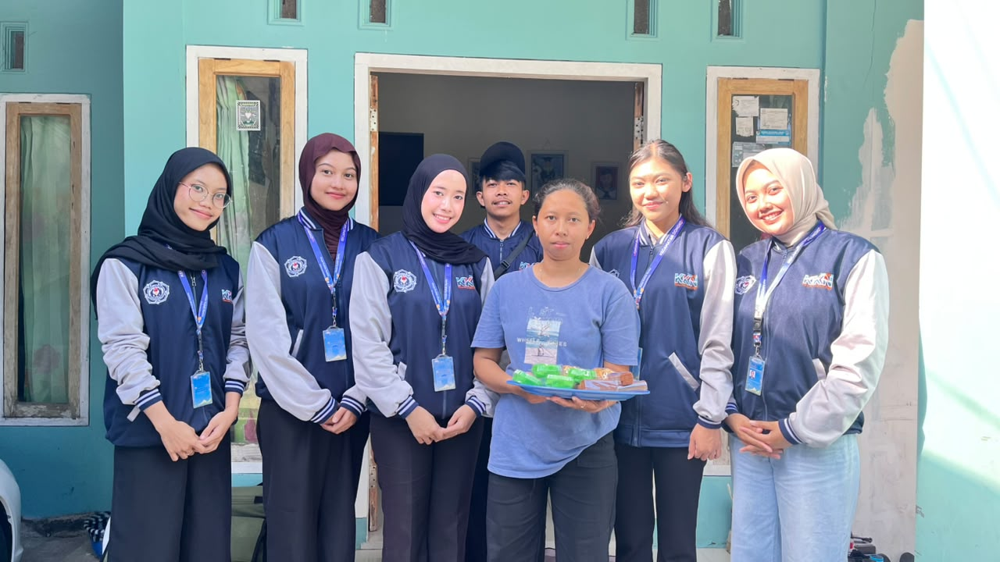

Sumber daya alam yang diiringi dengan produktivitas ekonomi warganya.
Dusun Sobo merupakan salah satu dusun andalan di Desa Salamwates yang memiliki keunikan dan potensi ekonomi luar biasa dari kemandirian warganya.
Masyarakat di dusun ini memiliki kreativitas tinggi dalam mengolah sumber daya lokal yang ada di sekitar mereka. Selama observasi, kami berfokus pada pengembangan sektor usaha berbasis rumahan (UMKM), perkebunan, serta kerajinan yang terus tumbuh dan menjadi fondasi utama roda perputaran ekonomi bagi keluarga dan warga sekitar.
Usaha kerajinan milik Bapak Muslim di Dusun Sobo ini telah berkembang pesat sejak didirikan pada tahun 2014. Berawal dari keterampilan mengolah bahan sekitar, produksi mebel ini menggunakan bahan baku utama berupa kayu yang didatangkan langsung dari wilayah Kecamatan Dongko serta bambu lokal. Dalam proses operasionalnya, Bapak Muslim dibantu oleh beberapa karyawan untuk mengerjakan berbagai jenis mebel, cikrak, serta aneka kerajinan bambu lainnya sesuai dengan pesanan pelanggan.
Strategi pemasaran produk selama ini berfokus pada sistem pemesanan langsung dan komunikasi melalui aplikasi WhatsApp. Meskipun pemasaran digital (online) sudah mulai dijajaki, pengelolaannya masih membutuhkan pengembangan lebih lanjut karena adanya keterbatasan tenaga. Usaha ini menjadi bukti nyata bahwa keterampilan lokal mampu melahirkan potensi ekonomi yang stabil, dengan peluang besar untuk menembus pasar yang lebih luas.
Pak Sutopo telah menjalankan usaha di sektor perkebunan dan peternakan selama lebih dari lima tahun. Dalam kegiatan perkebunannya, hasil panen didistribusikan secara rutin setiap hari melalui etek atau warung-warung di sekitar lingkungan Dusun Sobo. Cara distribusi yang konsisten ini tidak hanya membuat komoditas lebih mudah dijangkau oleh masyarakat, tetapi juga sangat efektif dalam menjaga hasil panen tetap tersalurkan dan bernilai ekonomi.
Selain mengandalkan sektor perkebunan, Pak Sutopo juga berhasil mengembangkan manajemen peternakan yang saling melengkapi. Kualitas ternak yang dikelola sangat baik, terbukti dari harga jual satu ekor ternak yang dapat mencapai angka sekitar Rp10.000.000 (sudah termasuk biaya blantik). Lebih dari itu, hewan ternak miliknya juga telah dilengkapi dengan administrasi berupa sertifikat kepemilikan yang sah, menjadikannya sebuah model usaha pedesaan yang potensial.
Berangkat dari inisiatif di dapur rumahan pada tahun 2021, Bu Maryani sukses mengembangkan usaha mikro yang mengolah bahan-bahan di sekitarnya menjadi aneka makanan ringan. Berkat kreativitasnya, usaha ini mampu memproduksi berbagai jenis varian unggulan seperti keripik tempe, rengginang, keripik pisang, keripik mbote, sale, sarang semut, kembang gula, hingga keripik singkong. Proses produksi berjalan lancar dengan didukung oleh tenaga dari beberapa orang pekerja.
Hasil produksi camilan yang telah dikemas rapi kemudian dipasarkan ke masyarakat dengan metode konsinyasi atau dititipkan untuk dijual melalui warung-warung di lingkungan sekitar. Keberagaman produk ini menjadi daya tarik utama dan menunjukkan bagaimana keterampilan mengolah pangan bisa mendatangkan keuntungan finansial dari rumah. Dengan fondasi yang sudah berjalan sekitar lima tahun, usaha makanan ringan ini siap untuk memperluas jangkauan pasarnya.
Dokumentasi observasi di Dusun Sobo.




